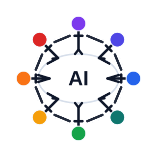

Option 1
Linked Circle
Straight hand links. Cleanest and most logo-like.
site/logo-options/logo-human-01-linked-circle.svgThree human-chain concepts based on your direction: 8 heads around the oval, simple joined hand-lines between them, and legs standing on the AI oval. Option 1 is the cleanest. Option 2 is softer and more friendly. Option 3 makes the standing posture on the oval stronger.

Linked Circle
Straight hand links. Cleanest and most logo-like.
site/logo-options/logo-human-01-linked-circle.svgSoft Embrace
Curved hand links. Feels warmer and more human.
site/logo-options/logo-human-02-soft-embrace.svgOval Stand
Tighter chain with a stronger standing-on-the-oval feel.
site/logo-options/logo-human-03-oval-stand.svg